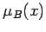
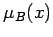
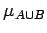
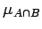
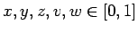

- 1. Prinzip:
- Der Grad der Zugehörigkeit eines beliebigen Elements
 zu den Mengen
zu den Mengen  bzw.
bzw.  soll nur von den beiden Zugehörigkeitsgraden
soll nur von den beiden Zugehörigkeitsgraden  und  des Elementes zu den beiden unscharfen Mengen A und B abhängen. Mit Hilfe zweier Funktionen
und  des Elementes zu den beiden unscharfen Mengen A und B abhängen. Mit Hilfe zweier Funktionen
lassen sich die unscharfe Mengenvereinigung und der unscharfe Mengenschnitt wie folgt definieren:
Die Zugehörigkeitsgrade und werden in einen neuen Zugehörigkeitsgrad abgebildet. Die Funktionen t und s werden t-Norm und t-Konorm, letztere auch s-Norm genannt.
- 2. Interpretation:
- Die Funktionen  und  stellen den Wahrheitswert dar, der sich aus der Verknüpfung der Wahrheitswerte und ergibt.
- 3. Definition der t-Norm:
- Die t-Norm ist eine binäre Operation t in [0,1] und eine Abbildung
Sie ist symmetrisch, assoziativ, monoton wachsend und besitzt 0 als Nullelement und 1 als neutrales Element.
Für  gelten folgende Eigenschaften:
- (E1) Kommutativität:
-
- (E2) Assoziativität:
-
- (E3) Spezielle Operationen mit Nullelement 0 und neutralen Element 1:
-
- (E4) Monotonie:
-
- Definition der s-Norm:
- Die s-Norm ist eine binäre Operation s in [0,1] und eine Abbildung
Sie besitzt die folgenden Eigenschaften:
- (E1) Kommutativität:
-
- (E2) Assoziativität:
-
- (E3) Spezielle Operationen mit Nullelement 0 und neutralen Element 1:
-
- (E4) Monotonie:
-
Mit Hilfe dieser Eigenschaften lassen sich jeweils eine ganze Klasse T von Funktionen der t-Normen bzw. eine Klasse S von Funktionen der s-Normen einführen. Detailierte Untersuchungen haben gezeigt, daß der folgende Zusammenhang gilt: